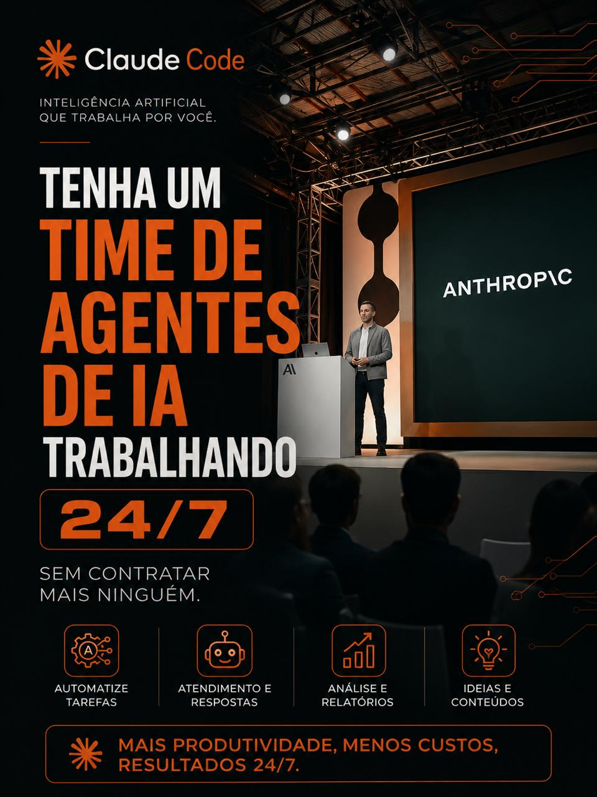

Quinta = Reels (vídeo reaproveitado de TikTok/V01–V07), segunda = Feed (imagem, pasta Refs/).
Instagram/Feed/F01/legenda.md.TikTok/V01.TikTok/V02.TikTok/V03.
TikTok/V04.TikTok/V05.TikTok/V06.TikTok/V07. Último Reels reaproveitado do TikTok.[inserir prova real aqui] — sem número real, o Copywriter não inventou (Regra de Ouro nº4).👉 F02 a R07 já estão rodando sozinhos via Task Scheduler — não precisa fazer nada. Rodar manualmente (fora do agendamento), se quiser:
Falta só o Feed F08: preencher o número real de prova social e criar a tarefa dele. Quer ajustar alguma data, trocar algum vídeo de lugar, ou resolver o F08 agora? É só falar aqui no chat.